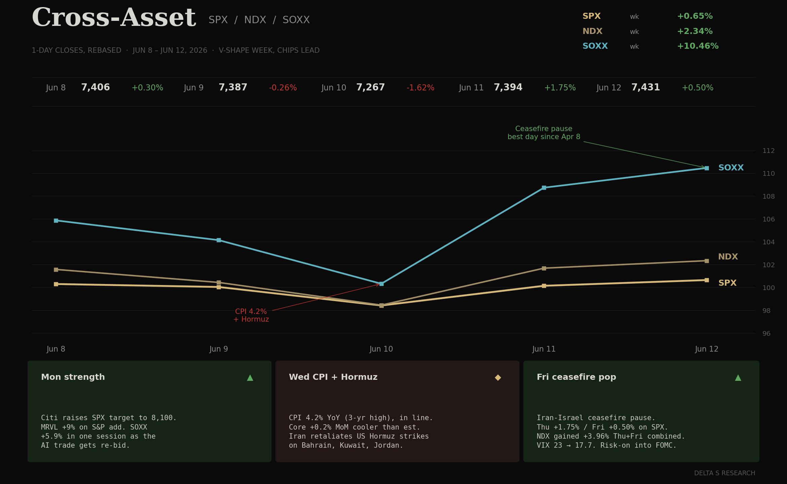
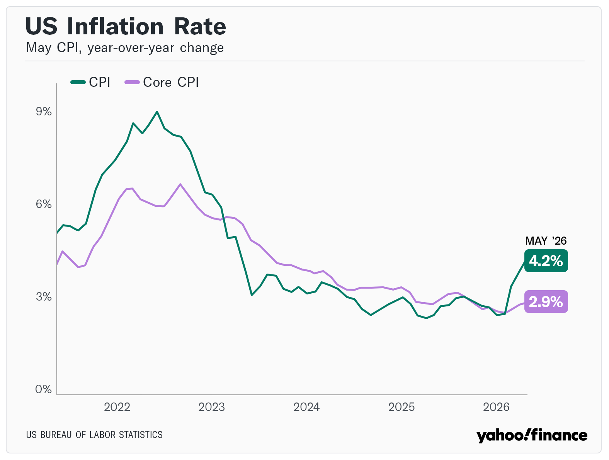
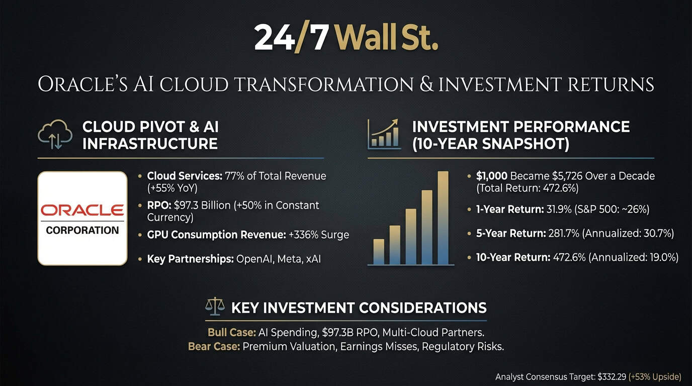
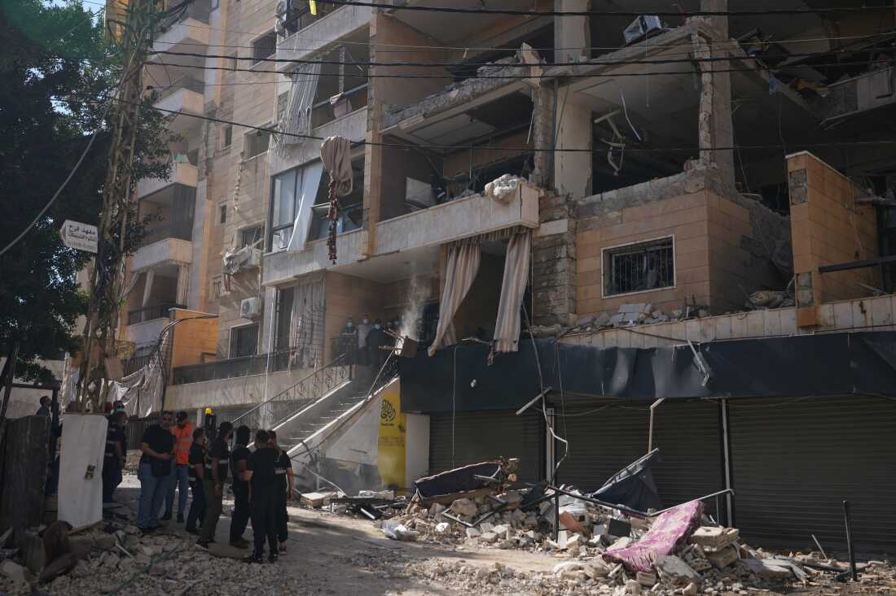

- Risk closed green on a textbook V-shape. SPX +0.65% to 7,431.45, NDX +2.34% to 29,635.95, SOXX +10.46% to 596.25. The semis catch-up was the print of the week: SOXX out-ran NDX by 8 points and gave back almost none of last week’s break.
- CPI on Wednesday landed at +4.2% YoY (3-year high) in line with consensus, but the read-through was cooler: core +0.2% MoM versus 0.3% expected, core +2.9% YoY in line. Energy +3.9% MoM drove the headline; ex-energy the disinflation gradient was unchanged.
- Iran-Israel escalated Mon to Wed, then de-escalated Thu to Fri. US Hormuz strikes, Iran retaliation into Bahrain, Kuwait and Jordan, then a ceasefire pause headline that took oil back to where it started and let risk re-bid into the weekend.
- VIX collapsed: 21.51 to 17.68 (minus 17.8%). Curve barely moved: 10Y 4.54% to 4.49%, 30Y 5.00% to 4.97%, DXY 100.07 to 99.75. The cut-trade did not come back, but the binary-vol bid that defined last week unwound completely.
- Oracle Q4 beat, stock down 10% on funding plans. RPO 638B (plus 363% YoY), cloud infra plus 93%, FY27 EPS raised to 8.05. The tape punished the 40B debt plus 20B equity raise and 55.7B capex (versus 50B plan). The AI-capex bill is being underwritten in real time.
The Week's Dominant Narrative
- CPI was the cleanest read of the week. Headline 4.2% YoY (3-year high) sounds hot until you look under the hood: 60%+ of the monthly print came from energy on the Hormuz spike. Core +0.2% MoM versus 0.3% expected is the disinflation pulse still doing its job. Curve agreed: 10Y rallied 5bp on the week despite the headline.
- Iran-Israel ran the intraweek tape, not the close. Mon to Wed was an oil-and-defense bid on US strikes in Hormuz and Iran’s retaliation. Thu to Fri was the unwind on ceasefire pause headlines. Oil round-tripped. The lesson: this kind of channel is now a 48-hour vol trade, not a multi-week regime.

- Friday was the best single day since April 8. On the ceasefire pause headline, SPX closed plus 0.50% on the day (after a plus 1.75% Thursday on cooler core CPI plus Oracle Q4). The two-day rebound carried NDX nearly plus 4%, SOXX plus 8.5%. The dealer gamma that was short into the print got covered into the close.
- SOXX plus 10.46% on the week is the story under the index. After last week’s minus 5.18% break, semis were the cleanest oversold setup into a soft macro tape. Citi raised SPX target to 8,100 Monday, MRVL plus 9% on S&P inclusion. The dispersion under the index has flipped back to single-name leadership.
- Oracle was the single-name event of the week. Q4 beat on every line, RPO 638B (plus 363% YoY) is a 23-quarter forward book. The stock dropped 10% Thursday because the funding pulled forward: 40B debt plus 20B equity raise plus capex revised up 162%. Cash burn now negative 23.7B FY26.
What Volatility Markets Priced
- VIX intraweek 23.34 Tue high to 17.59 Fri low. A full 5.75-point intraweek range, with the entire compression happening in 48 hours after the Wednesday low. The two binaries (CPI + Mid-East) resolved cleanly on the dovish side and the surface paid back the bid it took on Monday.
- SOXX realized over implied is the spread to watch. The 10.46% weekly move was approximately 4-5 standard deviations against last Friday’s implied. Sellers of SOXX premium into the CPI print got run over, then re-loaded into the Friday close at a much higher vol-of-vol regime.
- Single-name dispersion came back fast. CRDO closed Friday 264.76 (plus 27.97% on the week from 206.89), CIEN 445.22, AVGO 385.57 (still below pre-print). Mega-caps rebounded but unevenly: NVDA finished 204.87 (essentially flat WoW after touching 192 mid-week). The vol surface is back to pricing single-name skew, not index gamma.
- Oracle put surface paid both directions. Pre-print weekly straddles priced approximately +/- 7%. The actual realized was a 10% gap down on Thursday and a stabilization Friday. Anyone who sold strangles got hit on the downside leg; anyone who bought the put got paid the gap and only the gap.

Cross Asset Signals
- The curve held the line. 10Y closed 4.49% (5bp lower WoW) despite a 4.2% CPI headline. The bond market read the energy contribution as transitory and the core as on-track. 30Y 4.97% (3bp lower). The discount-rate help for equity multiples came back this week.
- DXY 99.75 (minus 0.32 WoW). Dollar gave back some of last week’s hawkish bid as the Iran channel de-escalated and the curve rallied. Gold did the symmetric move on the other side. The dollar still sits above 99 going into Warsh’s first FOMC, which is the upper bound of any dovish surprise scenario.
- Oil round-tripped fully. WTI spiked on Hormuz strikes Mon-Wed, gave it all back Thu-Fri on ceasefire pause headlines. Same chart as last week, opposite story: this time the unwind worked. Inflation-channel optionality is back on standby, not back in the price.
- Sector breadth led from underneath. SOXX plus 10.46%, IWM plus 4.01% (small caps catching up), DIA plus 0.66%. Tech-led but with small-cap participation: the breadth profile of an oversold bounce, not a defensive rotation. Staples that bid last week unwound this week.
- NDX reclaimed 29,000 then 29,500. From 28,508 Wed low to 29,635 Fri close (plus 3.96% in two sessions). The gap structure last Friday left a thinner book; this week’s rebound filled the gap and ran. June 16-17 FOMC opens with NDX at a higher base than the cut-trade pricing assumed.
Structural Fragilities
- CPI 4.2% headline is now the new political baseline. Whether or not the core print supports a soft-landing read, the headline number is now a year-over-year three-year high. Any further energy-channel shock from Iran or OPEC fits straight into a hawkish narrative. The market got the cooler core; it did not buy permanent disinflation.
- Oracle’s capex revision is a leading signal for hyperscaler funding. A jump from 50B to 55.7B in one print, with FCF turning negative 23.7B, is the AI-infrastructure tab in real time. Watch for MSFT, GOOGL, META, AMZN to mark to a higher capex line in their next prints. The lease-financing alternative (Stargate-style structures) is the route to avoid balance sheet damage.
- Iran-Israel is now a 48-hour vol channel, not a regime. Two consecutive weeks have seen full round trips in WTI on geopolitical headlines. The market has learned to price these as binary 48-72 hour events. The risk is a regime change inside that pattern: a Hormuz closure or a Strait of Bab-el-Mandeb spillover would not round-trip in 48 hours.

- SOXX plus 10.46% on the week mostly retraces last week’s minus 5.18% break, but the path matters. A V-shape this sharp on no fundamental catalyst (just a CPI in-line + a geopolitical ceasefire pause) tells us positioning, not earnings, drove both sides. The next leg depends on what NVDA prints in late August and what Oracle’s capex implies for the rest of hyperscaler spend.
- Warsh’s first FOMC lands on a setup the cut-trade cannot defend. Markets are pricing zero cuts in 2026, possibly dropping the easing bias, with a hawkish dot-plot shift expected. Warsh may withhold his own dot. The press conference is the binary: any signal that contradicts the curve’s patience read will reprice the front end again.
- The dispersion regime is fragile. Single-name leadership returned this week (CRDO plus 27.97%, SOXX plus 10.46% on idiosyncratic catalysts), but the underlying correlation structure can flip back to index-driven inside a single session, as we saw last week. The vol-of-vol regime change is the tell, not the level of VIX.
Our Trades This Week
- KORU (Put Spread): We opened this position to hedge against downside pressure in the KOSPI and the Korean semiconductor supply chain; the trade captured the mid-week volatility as the sector adjusted before the broader market rebound.
- AVGO (Put Spread): Initiated as a hedge against semiconductor sector volatility. Following the sharp recovery in the broader market, this position provides a defensive buffer against potential sector dispersion or a hawkish surprise from the FOMC.
- DELL: We closed these positions as the market's rapid V-shape recovery and increased breadth narrowed the opportunities for idiosyncratic gains, allowing us to lock in results and reallocate capital away from trades that had already played out.
What We Are Watching Next
- June 16-17 FOMC. Warsh’s first press conference. Dot plot consensus shifting to zero cuts 2026, one cut 2027. The question is whether Warsh signals patience by withholding his own dot, or sides openly with the hawks. Either resolution reprices the front end.
- Curve reaction to the FOMC press. The 10Y is at 4.49% going in. Any hawkish dot revision pushes it back above 4.55%; any signal of patience could break 4.40%. The 2s-10s slope is the cleanest tell on which side wins the meeting.
- Hyperscaler capex follow-through. Oracle revised 50B to 55.7B; if MSFT/GOOGL/AMZN mark to similar revisions in Q2 prints (mid-July to early-August), the AI-capex cycle moves from talked-about to balance-sheet visible. Watch the corporate debt market for hyperscaler issuance signals.
- Iran-Israel cadence. Two consecutive 48-hour round trips. Either the pattern holds and these become tradable binaries, or one of them does not round-trip and the regime changes. The Hormuz closure scenario is the asymmetric tail.
- NVDA into late August. After SOXX plus 10.46% on no NVDA-specific catalyst (NVDA itself was essentially flat WoW), the index sits on a higher base into the next print. The Q1 FY27 setup will frame H2 2026 AI sentiment.
- CPI services momentum. Energy carried the May CPI headline. The next print (early July) is where the disinflation gradient in services either holds or breaks. Watch shelter, transportation services, and medical care.
- Crypto follow-through. After last week’s leverage release, BTC stabilized this week. If the equity rebound carries crypto back into late-cycle leverage, the basis-trade dislocation risk resets. If not, the financialization unwind continues quietly.